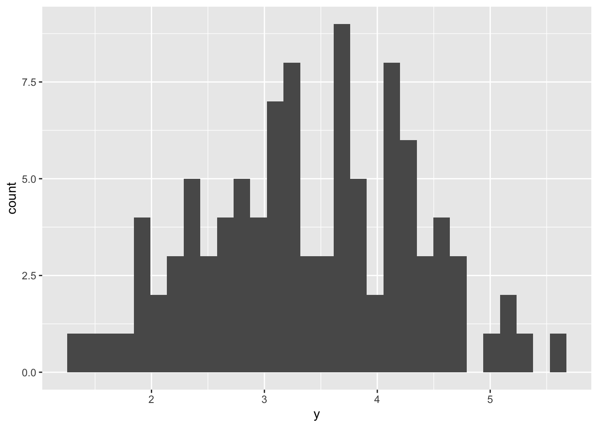
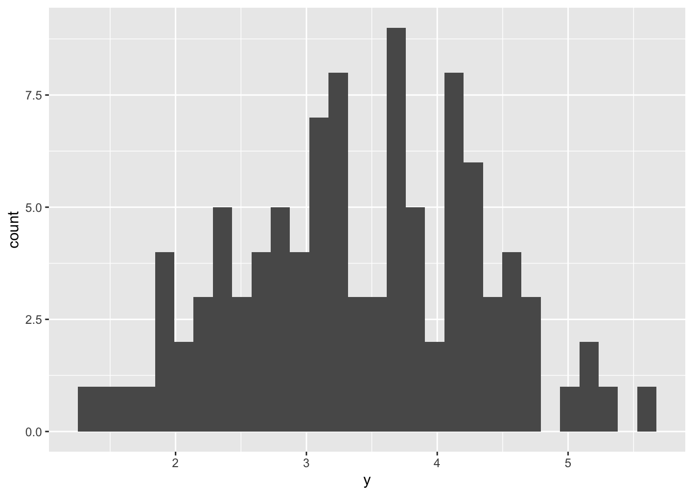
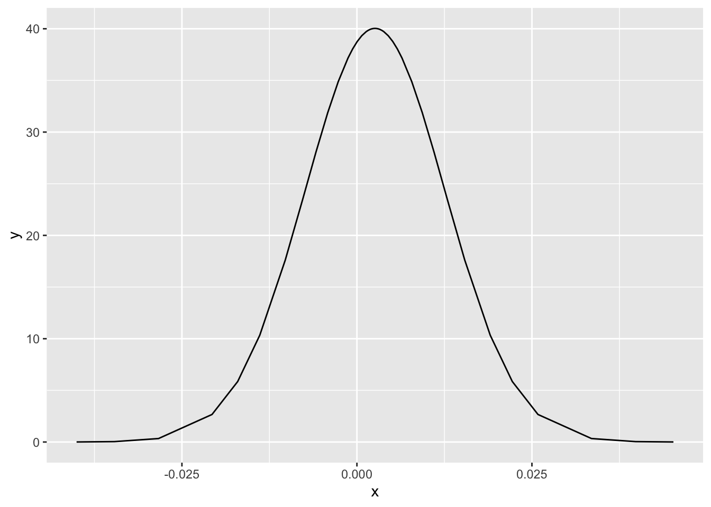

library(INLA)
library(ggplot2)
n <- 100
mu <- 3.5
sd <- 1
y <- rnorm(n, mu, sd)
ggplot(data.frame(y = y), aes(x = y)) +
geom_histogram()
R-INLA intercept model issuelibrary(INLA)
library(ggplot2)
n <- 100
mu <- 3.5
sd <- 1
y <- rnorm(n, mu, sd)
ggplot(data.frame(y = y), aes(x = y)) +
geom_histogram()
The mean of the intercept parameter is the empirical mean, as expected:
fit <- inla(y ~ 1, data = data.frame(y))
mean(y)[1] 3.393019fit$summary.fixed mean sd 0.025quant 0.5quant 0.975quant mode
(Intercept) 3.393019 0.09342358 3.20945 3.393019 3.576589 3.393019
kld
(Intercept) 8.162541e-09mean and prec do not apply to the interceptSetting priors using mean and prec in control.fixed does not alter the intercept:
fit2 <- inla(
y ~ 1,
data = data.frame(y = y),
control.fixed = list(mean = 3.5, prec = 1 / 0.01^2)
)
fit2$summary.fixed mean sd 0.025quant 0.5quant 0.975quant mode
(Intercept) 3.393019 0.09342358 3.20945 3.393019 3.576589 3.393019
kld
(Intercept) 8.162541e-09fit3 <- inla(
y ~ 1,
data = data.frame(y = y),
control.fixed = list(mean = 1000, prec = 1000)
)
fit3$summary.fixed mean sd 0.025quant 0.5quant 0.975quant mode
(Intercept) 3.393019 0.09342358 3.20945 3.393019 3.576589 3.393019
kld
(Intercept) 8.162541e-09prec.interceptThe standard deviation is \sigma, the variance is \sigma^2, and the precision is \tau = 1 / \sigma^2. Therefore high variance corresponds to a low precision. Low variance corresponds to high precision.
First a model with high standard deviation, and as such high uncertainty, about the intercept parameter:
high_sd <- 100
fit4 <- inla(
y ~ 1,
data = data.frame(y = y),
control.fixed = list(mean.intercept = 3.5, prec.intercept = 1 / high_sd^2)
)
fit4$summary.fixed mean sd 0.025quant 0.5quant 0.975quant mode
(Intercept) 3.393016 0.09342354 3.209447 3.393016 3.576585 3.393016
kld
(Intercept) 8.162471e-09fit4$marginals.fixed$`(Intercept)` |>
as.data.frame() |>
ggplot(aes(x = x, y = y)) +
geom_line()Now a model with low standard deviation, and as such low uncertainty, about the intercept parameter:
low_sd <- 0.01
fit5 <- inla(
y ~ 1,
data = data.frame(y = y),
control.fixed = list(mean.intercept = 3.5, prec.intercept = 1 / low_sd^2)
)
fit5$summary.fixed mean sd 0.025quant 0.5quant 0.975quant
(Intercept) 0.002809205 0.01000344 -0.01680654 0.002809202 0.02242496
mode kld
(Intercept) 0.002809202 5.527533e-11fit5$marginals.fixed$`(Intercept)` |>
as.data.frame() |>
ggplot(aes(x = x, y = y)) +
geom_line()What about setting the mean.intercept to be large? There is no almost no difference here.
fit6 <- inla(
y ~ 1,
data = data.frame(y = y),
control.fixed = list(mean.intercept = 1000, prec.intercept = 1 / low_sd^2)
)
fit6$summary.fixed mean sd 0.025quant 0.5quant 0.975quant
(Intercept) 0.002808458 0.01000344 -0.01680728 0.002808455 0.02242422
mode kld
(Intercept) 0.002808455 5.52752e-11fit6$marginals.fixed$`(Intercept)` |>
as.data.frame() |>
ggplot(aes(x = x, y = y)) +
geom_line()
What about large mean.intercept with a high standard deviation? Now it’s recovering 3.5.
fit7 <- inla(
y ~ 1,
data = data.frame(y = y),
control.fixed = list(mean.intercept = 1000, prec.intercept = 1 / high_sd^2)
)
fit7$summary.fixed mean sd 0.025quant 0.5quant 0.975quant mode
(Intercept) 3.393016 0.09342354 3.209447 3.393016 3.576585 3.393016
kld
(Intercept) 8.16248e-09fit7$marginals.fixed$`(Intercept)` |>
as.data.frame() |>
ggplot(aes(x = x, y = y)) +
geom_line()mean.intercept behave?y <- rnorm(2, mean = 1000, sd = 1)
fit8 <- inla(
y ~ 1,
data = data.frame(y = y),
control.fixed = list(mean.intercept = 0)
)
fit8$summary.fixed mean sd 0.025quant 0.5quant 0.975quant mode
(Intercept) 1000.364 0.5144745 999.296 1000.364 1001.431 1000.364
kld
(Intercept) 0.007152865fit9 <- inla(
y ~ 1,
data = data.frame(y = y),
control.fixed = list(mean.intercept = 0, prec.intercept = 1)
)
fit9$summary.fixed mean sd 0.025quant 0.5quant 0.975quant mode
(Intercept) 0.004375864 0.9999947 -1.956515 0.004375864 1.965266 0.004375864
kld
(Intercept) 5.526818e-11sessionInfo()R version 4.3.2 (2023-10-31)
Platform: aarch64-apple-darwin20 (64-bit)
Running under: macOS Sonoma 14.2.1
Matrix products: default
BLAS: /Library/Frameworks/R.framework/Versions/4.3-arm64/Resources/lib/libRblas.0.dylib
LAPACK: /Library/Frameworks/R.framework/Versions/4.3-arm64/Resources/lib/libRlapack.dylib; LAPACK version 3.11.0
locale:
[1] en_US.UTF-8/en_US.UTF-8/en_US.UTF-8/C/en_US.UTF-8/en_US.UTF-8
time zone: Europe/London
tzcode source: internal
attached base packages:
[1] stats graphics grDevices utils datasets methods base
other attached packages:
[1] ggplot2_3.4.4 INLA_24.01.29 sp_2.1-2 Matrix_1.6-5
loaded via a namespace (and not attached):
[1] gtable_0.3.4 jsonlite_1.8.8 dplyr_1.1.4 compiler_4.3.2
[5] tidyselect_1.2.0 Rcpp_1.0.12 MatrixModels_0.5-3 parallel_4.3.2
[9] scales_1.3.0 splines_4.3.2 yaml_2.3.8 fastmap_1.1.1
[13] lattice_0.21-9 R6_2.5.1 labeling_0.4.3 generics_0.1.3
[17] classInt_0.4-10 sf_1.0-15 knitr_1.45 htmlwidgets_1.6.4
[21] tibble_3.2.1 fmesher_0.1.5 units_0.8-5 munsell_0.5.0
[25] DBI_1.2.0 pillar_1.9.0 rlang_1.1.3 utf8_1.2.4
[29] xfun_0.41 cli_3.6.2 withr_2.5.2 magrittr_2.0.3
[33] class_7.3-22 digest_0.6.34 grid_4.3.2 rstudioapi_0.15.0
[37] lifecycle_1.0.4 vctrs_0.6.5 KernSmooth_2.23-22 proxy_0.4-27
[41] evaluate_0.23 glue_1.7.0 farver_2.1.1 colorspace_2.1-0
[45] fansi_1.0.6 e1071_1.7-14 rmarkdown_2.25 tools_4.3.2
[49] pkgconfig_2.0.3 htmltools_0.5.7